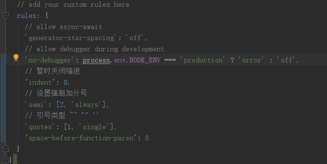

1. 报错Missing space before function parentheses的问题
解决：在代码目录中，打开.eslint文件，并在rules中添加如下一行代码即可：

"space-before-function-paren": 0
2. 报错eslint: missing semicolon
解决：在rules中添加
"semi": [2, "always"] // 设置强制加分号
3.报错eslint: string must be use singlequote
解决：在rules中添加 "quotes": [1, "single"], //引号类型 `` "" ''
其他ESlint错误提示：
“Missing semicolon.” : “缺少分号.”,
“Use the function form of \”use strict\”.” : “使用标准化定义function.”,
“Unexpected space after ‘-’.” : “在’-'后面不应出现空格.”,
“Expected a JSON value.” : “请传入一个json的值.”,
“Mixed spaces and tabs.”: “空格和TAB重复.”,
“Unsafe character.” : “不安全的字符.”,
“Line too long.”: “本行中的字符超过设定的最大长度.”,
“Trailing whitespace.”: “本行末尾有过多无用空格.”,
“Script URL.” : “脚本URL.”,
“Unexpected {a} in ‘{b}’.” : “在 ‘{b}’ 中不该出现 {a}.”,
“Unexpected ‘{a}’.” : “不该在此出现’{a}’.”,
“Strings must use doublequote.” : “字符串需要用双引号”,
“Unnecessary escapement.” : “不需要转义”,
“Control character in string: {a}.” : “在字符串中出现了Control的字符”,
“Avoid \\’.” : “避免 \\”,
“Avoid \\v.” : “避免 \\v”,
“Avoid \\x-.” : “避免 \\x-”,
“Bad escapement.” : “错误的转义字符”,
“Bad number ‘{a}’.” : “错误的数字 ‘{a}’”,
“Missing space after ‘{a}’.” : “在’{a}’之后缺少空格”,
“Don’t use extra leading zeros ‘{a}’.” : “不要再’{a}’的前面用多余的0″,
“Avoid 0x-. ‘{a}’.” : “避免使用 0x-. ‘{a}’.”,
“A trailing decimal point can be confused with a dot ‘{a}’.” : “在’{a}’中使用点尾随小数点”,
“Unexpected comment.” : “不该在此处出现注释”,
“Unescaped ‘{a}’.” : “没有转义 ‘{a}’”,
“Unexpected control character in regular expression.” : “在正则表达式中出现了control字符”,
“Unexpected escaped character ‘{a}’ in regular expression.” : “在正则表达式中出现了没有转义的字符 ‘{a}’”,
“Expected ‘{a}’ and instead saw ‘{b}’.” : “应该用 ‘{a}’代替’{b}’”,
“Spaces are hard to count. Use {{a}}.” : “空格难以统计，请使用 {{a}}”,
“Insecure ‘{a}’.” : “不安全的 ‘{a}’”,
“Empty class.” : “空的class”,
“Expected a number and instead saw ‘{a}’.”:“应该用数字代替’{a}’”,
“‘{a}’ should not be greater than ‘{b}’.”:“‘{a}’不应该比’{b}’大”,
“‘hasOwnProperty’ is a really bad name.”: “‘hasOwnProperty’是关键字”,
“‘{a}’ was used before it was defined.”:“‘{a}’未定义就已经使用了.”,
“‘{a}’ is already defined.”:“‘{a}’被重复定义”,
“A dot following a number can be confused with a decimal point.”:“数字后面的一个点会被误认为是十进制的小数点”,
“Confusing minusses” : “容易混淆的负数表达-”,
“Confusing plusses.” : “容易混淆的正数表达+”,
“Unmatched ‘{a}’.” : “无法匹配的’{a}’”,
“Expected ‘{a}’ to match ‘{b}’ from line {c} and instead saw ‘{d}’.”:“在行{c}中需要用’{a}’和’{b}’匹配，用来代替’{d}’”,
“Unexpected early end of program.”:“程序不可预期的提前终止”,
“A leading decimal point can be confused with a dot: ‘.{a}’.”:“‘{a}’前的点容易混淆成小数点”,
“Use the array literal notation [].”:“使用数组的符号 []“,
“Expected an operator and instead saw ‘{a}’.”:“需要用一个符号来代替’{a}’”,
“Unexpected space after ‘{a}’.”:“在’{a}’之后不能出现空格”,
“Unexpected space before ‘{a}’.”:“在’{a}’之前不能出现空格”,
“Bad line breaking before ‘{a}’.”:“在’{a}’之前错误的换行”,
“Expected ‘{a}’ to have an indentation at {b} instead at {c}.”:“‘{a}’需要在{c}而不是{b}处缩进”,
“Line breaking error ‘{a}’.”:“换行错误 ‘{a}’”,
“Unexpected use of ‘{a}’.”:“此处不能用’{a}’”,
“Bad operand.”:“错误的操作数”,
“Use the isNaN function to compare with NaN.”:“使用isNaN来与NaN比较”,
“Confusing use of ‘{a}’.”:“容易混淆的’{a}’的使用”,
“Read only.”:“只读的属性”,
“‘{a}’ is a function.”:“‘{a}’是一个函数”,
‘Bad assignment.’:“错误的赋值”,
“Do not assign to the exception parameter.”:“不要给额外的参数赋值”,
“Expected an identifier in an assignment and instead saw a function invocation.”:“在赋值的语句中需要有一个标识符，而不是一个方法的调用”,
“Expected an identifier and instead saw ‘{a}’ (a reserved word).”:“需要有一个标识符，而不是’{a}’(保留字符)”,
“Missing name in function declaration.”:“在方法声明中缺少名称”,
“Expected an identifier and instead saw ‘{a}’.”:“需要有一个标识符，而不是’{a}’”,
“Inner functions should be listed at the top of the outer function.”:“内部函数的声明应该放在此函数的顶部。”,
“Unreachable ‘{a}’ after ‘{b}’.”:“在’{b}’之后无法获取’{a}’”,
“Unnecessary semicolon.”:“不必要的分号”,
“Label ‘{a}’ on {b} statement.”:“将’{a}’放在{b}的声明中”,
“Label ‘{a}’ looks like a javascript url.”:“‘{a}’看上去像一个js的链接”,
“Expected an assignment or function call and instead saw an expression”:“需要一个赋值或者一个函数调用，而不是一个表达式.”,
“Do not use ‘new’ for side effects.”:“不要用’new’语句.”,
“Unnecessary \”use strict\”.”:“不必要的\”use strict\”.”,
“Missing \”use strict\” statement.”:“缺少\”use strict\”的声明”,
“Empty block.”:“空的模块”,
“Unexpected /*member ‘{a}’.”:“不应出现 /*元素 ‘{a}’.”,
“‘{a}’ is a statement label.”:“‘{a}’是一个声明”,
“‘{a}’ used out of scope.”:“‘{a}’使用超出范围”,
“‘{a}’ is not allowed.”:“不允许使用’{a}’”,
“‘{a}’ is not defined.”:“‘{a}’没有被定义”,
“Use ‘{a}’ to compare with ‘{b}’.”:“使用’{a}’与’{b}’相比”,
“Variables should not be deleted.”:“变量需要被删除”,
“Use the object literal notation {}.”:“使用对象的文字符号 {}”,
“Do not use {a} as a constructor.”:“不要使用{a}作为一个构造对象”,
“The Function constructor is eval.”:“The Function constructor is eval.”,
“A constructor name should start with an uppercase letter.”:“一个构造对象的名称必须用大写字母开头.”,
“Bad constructor.”:“错误的构造对象”,
“Weird construction. Delete ‘new’.”:“构造对象有误，请删除’new’”,
“Missing ‘()’ invoking a constructor.”:“缺少括号()”,
“Avoid arguments.{a}.”:“避免参数.{a}.”,
“document.write can be a form of eval.”:“document.write是eval的一种形式”,
‘eval is evil.’:“尽量不要使用eval”,
“Math is not a function.”:“Math不是一个函数”,
“Missing ‘new’ prefix when invoking a constructor.”:“此处缺少了’new’”,
“Missing radix parameter.”:“缺少参数”,
“Implied eval is evil. Pass a function instead of a string.”:“传递一个函数，而不是一个字符串”,
“Bad invocation.”:“错误的调用”,
“['{a}'] is better written in dot notation.”:“['{a}']最好用点.的方式”,
“Extra comma.”:“多余的逗号”,
“Don’t make functions within a loop.”:“不要用循环的方式创建函数”,
“Unexpected parameter ‘{a}’ in get {b} function.”:“在{b}方法中不该用到参数’{a}’”,
“Duplicate member ‘{a}’.”:“重复的’{a}’”,
“Expected to see a statement and instead saw a block.”:“此处应该是语句声明.”,
“Too many var statements.”:“过多var的声明”,
“Redefinition of ‘{a}’.”:“‘{a}’被重复定义”,
“It is not necessary to initialize ‘{a}’ to ‘undefined’.”:“无需将’{a}’初始化为’undefined’”,
“Expected a conditional expression and instead saw an assignment.”:“此处需要一个表达式，而不是赋值语句”,
“Expected a ‘break’ statement before ‘case’.”:“在’case’之前需要有’break’.”,
“Expected a ‘break’ statement before ‘default’.”:“在’default’之前需要有’break’.”,
“This ‘switch’ should be an ‘if’.”:“此处’switch’应该是’if’.”,
“All ‘debugger’ statements should be removed.”:“请删除’debugger’的语句”,
“‘{a}’ is not a statement label.”:“‘{a}’不是一个声明标签.”,
“Expected an assignment or function call and instead saw an expression.”:“需要一个语句或者一个函数调用，而不是一个表达式”,
“Function declarations should not be placed in blocks. Use a function expression or move the statement to the top of the outer function.”:“函数的声明不能放在类似if的块中，需要放在外部函数的顶部.”
转载自：https://www.cnblogs.com/lcddjm/p/6595007.html